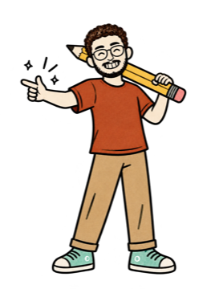
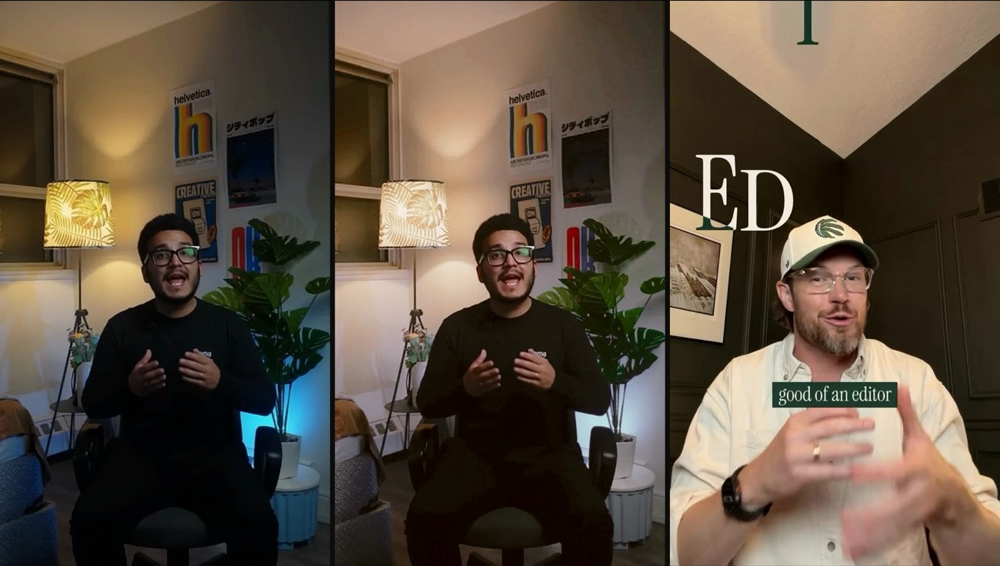
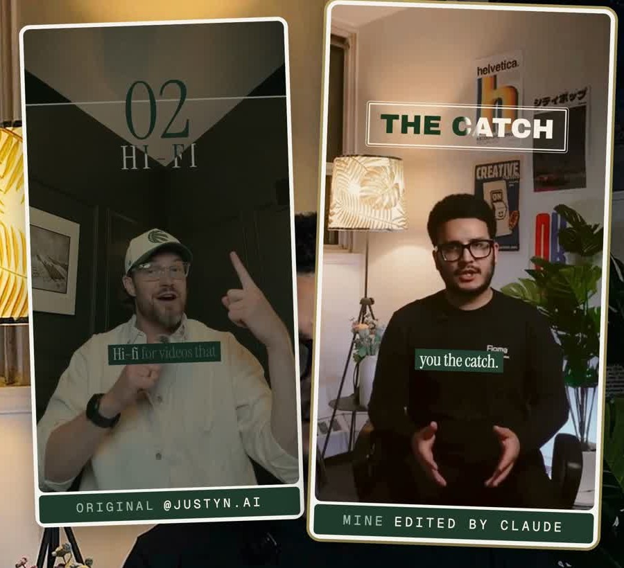
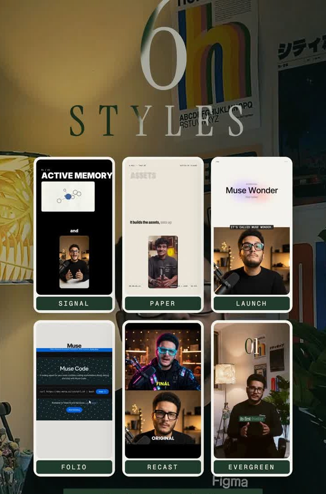
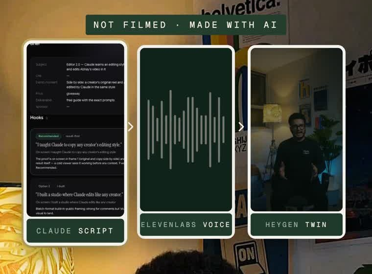

@theabhaychopra
@theabhaychopraWhat you need
- Claude Code — the desktop app or the terminal, pointed at a folder for your videos (claude.com/claude-code)
- ffmpeg — free; Claude uses it to pull frames, cut and mix (ffmpeg.org)
- Remotion — renders the graphics from code; free for individuals (remotion.dev)
- One reel whose editing you love, saved as an .mp4
- Your own clip — a talking-head video is perfect to start
How it works
Claude doesn't "get inspired". It measures the reel — colours, fonts, sizes, timing — builds every graphic to those numbers, checks its copy against the original, then edits your video with it.
The 5 prompts
1Study the reel — measure everything
2Build the pieces — to those numbers, then compare
3Match the colour grade — a LUT for your footage
4Edit your video — in the new style
5Check before you post — frames and loudness
Study the reel

Copy this prompt
Here's a reel I love: reel.mp4. Study its editing style thoroughly — measure it, don't eyeball it. 1. Pull 3 frames a second and make contact sheets so you can see every beat. 2. Sample the exact colours (hex) of the text, boxes and backgrounds. 3. Measure every text element from the pixels: size, position, alignment, letter spacing. 4. Identify the fonts: crop a word, render 5–10 candidate fonts at the same size and score how well each overlaps the crop. Pick by the score, not by eye. 5. Time every animation and transition frame by frame: how long, which easing, what moves. Write it all up as STYLE.md with tables of real numbers.
What you get back — measured on one reel
FontsInstrument Serif for titles and captions (0.76 overlap score), a mono for labels
Colourscream
#F5EEE1 on dark, green #1C351F on light, caption box #233E2CCaptions67 px, box at y 1318–1400; each word lights up as it's said
Titlesevery line sized to one width; letters rise in 3–4 frames
Transitionscamera-blur whips: 0.1 s in, 0.13 s hold, 0.12 s out
Gradeolive shadows, warm mids, cream highlights — no blue anywhere
From @justyn.ai's reel "three different editing styles" — the style is his.
2
Build the pieces to those numbers
Copy this prompt
Build each graphic in STYLE.md as a reusable Remotion component — titles, captions, cards, transitions — using the measured fonts, colours, sizes and timings. Then rebuild 3–4 frames of the original reel and put them next to the real frames. Measure the difference and fix anything more than a few pixels off. Keep going until they match.
The step most people skip — and why the copy looks like the original.
3
Match the colour grade
Copy this prompt
Measure the reel's colour grade from the footage only, not the graphics: black and white points, the tone curve, the tint of the shadows, mids and highlights, the saturation, and which hues it uses. Make a LUT that moves my clip me.mp4 onto that look. Keep skin natural — if my face ends up darker than in the reel, lift it. Show me before / after / the original side by side.
If the reel's room is much brighter or darker than yours, ask for the grade at half strength.

4
Edit your video in the style
Copy this prompt
Now edit me.mp4 in this style. Transcribe it, cut every pause longer than 0.12 s, and lay out the edit: every graphic comes in on the word that names it, one graphic at a time. Grade it with the LUT, add captions in the style, a quiet music bed and small sound hits, and mix to −14 LUFS. Render a half-size draft first and show me a frame every 2 seconds.

5
Check before you post
Copy this prompt
Before I post: make a contact sheet with one frame every 2 seconds, list anything that pops in or vanishes in a single frame, check the loudness, and fix what's off. Then render the final in 4K.
Save the style
- One reel is enough — if the study is in numbers, not vibes.
- Save each style in your folder (the components + STYLE.md). Your next video only needs prompt 4.
- Credit the original creator on screen and in your caption whenever you show their reel.
- Your room changes the look. If your footage won't fully match the grade, go halfway and let the graphics do the work.

How I didn't film this reel
ScriptClaude wrote it from a short brief and checked it against what works on my own Instagram
Voicemy ElevenLabs voice clone read the script
Videomy HeyGen AI twin (Avatar III — it keeps my real recorded footage, so it stays sharp)
EditClaude, in the style from prompt 1 — graded, captioned, mixed and exported in 4K
Everything AI-made is shown as AI-made. Clone only your own voice and face.


Now copy your favourite
One reel you love is all it takes.
— Abhay@theabhaychopra